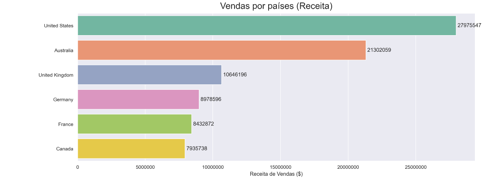

Análise estratégica baseada em dados

Ao adotar uma abordagem baseada em dados para a gestão de vendas, é possível identificar os principais padrões, tendências e oportunidades do negócio. Além disso, uma boa análise de dados deve mostrar: quem são seus principais clientes , quais os produtos mais populares e rentáveis , quais departamentos estão apresentando melhores retornos , quando houve queda no faturamento , entre outras informações que ajudam a melhorar a tomada de decisão.
Com isso, neste estudo de caso utilizo um dataset retirado do Kaggle contendo dados sobre a vendas de produtos de uma loja de bicicletas e acessórios ao longo dos anos. A partir destes dados foram gerados insights e sugestões de melhorias para apoiar as decisões estratégicas do negócio.
Abaixo segue o dataframe utilizado para análise, onde na primeira etapa foi realizado o tratamento e a avaliação da consistência dos dados:
Logo em seguida foram geradas algumas visualizações focadas a responder perguntas relevantes ao negócio, como por exemplo:
Quais produtos geram MAIORES RECEITAS?
Qual o melhor mês para vendas?
Qual categoria de produtos é vital para a empresa e por quê?
Além das venda dos produtos, foram avaliadas também, informações sobre os consumidores:
Enxergando quais grupos etários produzem maiores receitas:

Analisando Clientes por localização:
Diferencial de compras em relação ao gênero dos clientes:
Dentre outras análises que você poderá explorar melhor pelo link no GitHub
POWER BI
Além do uso do PYTHON para as análises de vendas, foi realizado uma abordagem de visualização dinâmica com POWER BI, onde foram gerados visualizações em três dimensões: geral, produto e clientes:
Dados Gerais:
Através dos Dados Gerais pode-se acomapanhar o desenvolvimento da receita ao longo dos meses e anos, bem como selecionar um período específico. Também é possível ver toda receita acumulada bem como total de custos, lucro e pedidos da empresa.
Dados Produtos:
Já na parte contendo Dados dos Produtos, o dashboard mostra os principais produtos que representam uma parte importante da receita e quantidade de vendas. Há um demonstrativo da parcela que cada sub-categoria representa nos lucros da empresa além de poder ter a opção de ver esses dados pro categoria.
Dados Clientes:
Nas informações sobre o comportamento dos clientes, o dashboard acompanha o lucro por cada característica dos clientes, facilitando assim para a gestão reconhecer onde e quem são seus pricinpais consumidores. Também há a opção de especificar os dados por cada produto individualmente, sendo mais preciso ainda nas análises de mercado.
Considerações Finais
Por fim, tais descobertas servem de base para construção de estratégias eficazes e responsivas as demandas, o que converte-se em decisões mais acertivas e eficientes, alinhada as necessidades reais e as especificidades do negócio. Como por exemplo uma boa manutenção dos estoques nos períodos identificados de alta demanda, ou a necessidade de manter centros de distribuições próximos as localidades que possuem maiores demandas, para assim diminuir os custos logísticos e manter boas relações como os clientes através de respostas mais rápidas.
Com isso, através desta Análise de Dados, acredito que a empresa poderá se beneficiar com decisões mais acertivas, identificar oportunidades de crescimento e aumentar a sua eficiência operacional, contribuindo portanto, para o seu sucesso a longo prazo.
(caso queira fazer algum comentário, entre em contato através de minhas redes socias)